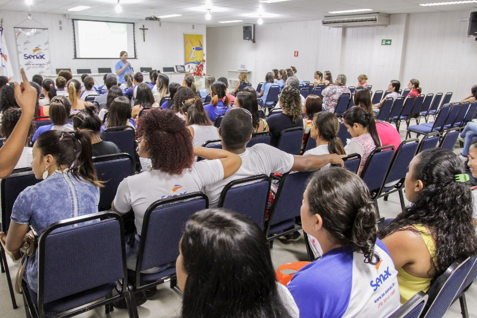

O Senac é uma empresa que oferece diversos serviços educativos, como ensino médio, capacitações em 18 áreas
do conhecimento, com rápida inserção no mercado profissional, cursos técnicos adequados às exigências do
mundo profissional, focados
na aprendizagem prática, e ainda graduação em cursos tecnólogos e de bacharelado com qualidade reconhecida
pelo MEC. O Senac oferta vagas
gratuitas a pessoas de baixa renda por meio do Programa Senac Gratuidade e outras iniciativas e assim como
as programações pagas, os cursos
gratuitos prezam pela qualidade e excelência que guiam o Senac há 70 anos. A administração do Senac é
baseada em sólidos princípios
de gestão e transparência. Por isso, torna pública informações relevantes sobre suas atividades e
resultados, como: dados orçamentários;
demonstrações contábeis, licitações, dados de produção e de gratuidade, entre outros.Com tantas décadas de
história, a organização permanece contemporânea e reafirma sua capacidade de inovação e renovação, atributo
que a evidencia.
Como marca desse desempenho, acompanhamos e abrimos caminhos para as tendências do mundo do trabalho no
comércio de bens, serviços e turismo.
Nossa História
O Serviço Nacional de Aprendizagem Comercial (Senac) foi criado em 10 de janeiro de 1946, no Decreto-Lei
8.621.
A partir do ano seguinte,
o Senac passou a desenvolver um trabalho até então inovador no país: oferecer, em larga escala, educação
profissional destinada à formação
e à preparação de trabalhadores para o comércio. Na mesma data de sua criação foi promulgado o Decreto-Lei
8.622, que dispõe sobre a atuação
da Instituição na aprendizagem comercial. Desde 1946, o Serviço Nacional de Aprendizagem Comercial – Senac é
o
principal agente de educação
profissional voltado para o Comércio de Bens, Serviços e Turismo do País. Hoje, está presente em mais de
1.800
municípios, de Norte a Sul do
Brasil, onde mantém infraestrutura de ponta composta por mais de 600 unidades escolares, empresas
pedagógicas e
unidades móveis. Seu portfólio
contempla cursos presenciais e a distância, em diversas áreas do conhecimento, que vão da Formação Inicial e
Continuada à Pós-graduação e permitem
ao aluno planejar sua carreira profissional em uma perspectiva de educação continuada. Pioneiros, já em
1947,
apresentamos a Universidade do Ar, que
ensinava pelas ondas do rádio. Acompanhamos a evolução tecnológica e, hoje, praticamos a inclusão
educacional
por meio de avançados recursos digitais,
o que nos permite falar a pessoas do Brasil inteiro.
Depoimentos de ex-alunos

"A proposta do curso era o que eu estava procurando e só tenho a agradecer os professores, em especial a
Suzana
e o Luís Saboia. Como sempre estive
ligada à Academia, sou muito curiosa e dei trabalho para eles, questionando, querendo saber sempre mais do
que o
básico e achei todos eles muito bem-preparados
em relação aos conteúdos, super didáticos, pacientes, simpáticos e excelentes profissionais"
Mariana Gomes (Brasília-DF), pós-graduada em Nutrição e Gastronomia.
"O curso me disponibilizou uma promoção de cargo. Poderei explorar de maneira mais efetiva o que foi
aprendido.
Desejo que o Senac continue sendo essa instituição incrível,
possibilitando que outras pessoas consigam trilhar os seus caminhos por meio do aprendizado desta
instituição".
Thais Berto (São Paulo), pós-graduada em Gestão Estratégica de Marketing.
"Meu primeiro curso EAD foi em 1983 pelo Senac e, até hoje, tenho o certificado; minha opção pelo curso EAD
é
por conta da qualidade e seriedade dos cursos do Senac EAD,
que proporcionam aos alunos uma plataforma de ensino prática, clara e objetiva, ótimos e-books didáticos,
acesso
a biblioteca, excelentes vídeos-aulas e metodologias de
ensino e aprendizagem modernas e atuais".
Diogo Manerich, 58 anos (São Bernardo do Campo/SP), pós-graduado em SGI.
"O Senac sempre foi uma referência acadêmica e ter essa instituição no currículo faz toda diferença. Todos
os
materiais didáticos possuem informações extremamente relevantes,
além de mesclar com referências do atual cenário em que vivemos. Conheci professores generosos e com
excelente
repertório acadêmico".
Bryan Braga, publicitário e pós-graduado em Gestão Estratégica de Marketing (São Paulo/SP).
MISSÃO
"Educar para o trabalho em atividades de comércio de bens, serviços e turismo."
VISÃO
"Ser a instituição brasileira que oferece as melhores soluções em educação profissional, reconhecida pelas
empresas."
PRINCÍPIOS
"Busca de harmonia; Consciência em ação; Transparência; Responsabilidade pelo todo; Pró-soluções; Equilíbrio
de interesses; Respeito à diversidade; Sustentabilidade"